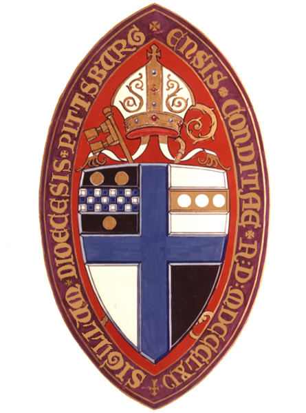

|

|

|
|
St. Paul's TEC is a parish in the Episcopal Diocese of Pittsburgh which is a diocese in The Episcopal Church, and thus a part of the world-wide fellowship of churches known as the Anglican Communion.
We welcome everyone - young and old, of all races and ethnic backgrounds, rich and poor, men and women, seekers and already committed Christians.
A History of St. Paul's Monogahela